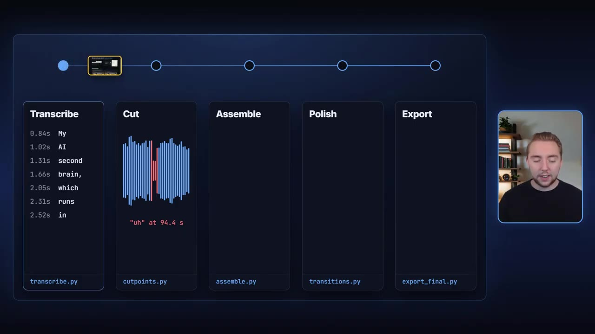
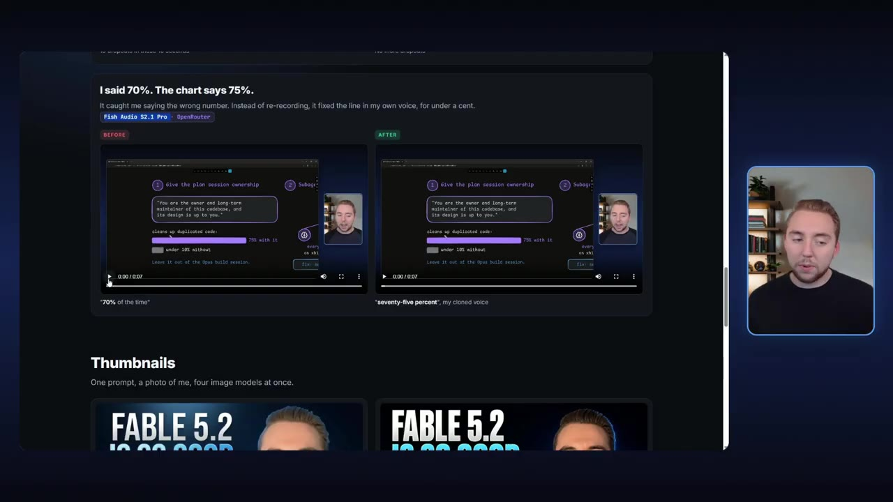

This Skill Turns Claude Code Into an Expert Video Editor (I'm Giving It Away)
▶ 원본 영상 보기한눈에 보기
- Cole Medin이 몇 달간 다듬은 edit-video 스킬(무료·오픈소스)로, 코딩 에이전트가 원본 영상 폴더를 받아 편집된 완성 영상까지 만들어 준다.
- 핵심 파이프라인은 스크립트 기반 5단계(전사 → 재촬영 제거 → 컷 → 조립 → 마무리·내보내기)이며, 에이전트가 총괄하고 스크립트가 영상에서 읽을 수 없는 정보를 제공한다.
- 콘텐츠 종류(말하는 얼굴, 화면+얼굴, 쇼츠, 강의 등)는 표 한 장에 단계의 조합으로 정의돼 있어 직접 고치고 확장할 수 있다.
- OpenRouter의 멀티모달 모델을 쓰는 "풀 파이프라인"은 영상 시청·음성 복제·썸네일까지 하며, 영상 하나 편집에 $2.71이 들었다고 한다.
- 더듬음 제거, 부드러운 전환, 잘린 문장 복구, 끊기는 오디오 수정, 음성 복제로 단어 교정 등 세세한 문제까지 잡아낸다.
이런 분께 도움이 됩니다
- 교육·발표·설명형 영상을 자주 만들며 편집 시간을 줄이고 싶은 유튜버·강사.
- Claude Code 등 코딩 에이전트에 스킬을 붙여 반복 작업을 자동화하려는 분.
핵심 내용
스킬의 목적과 한계
- 스킬 없이도 에이전트에 원본 파일을 주면 90%까지는 되지만, 마지막 10%의 미세한 문제를 고치는 데 직접 편집하는 것보다 시간이 더 든다. (0:32)
- 이 스킬은 그 마지막 10%를 반복 실험으로 규칙화한 것이다.
- 화려한 영상보다 프레젠테이션·교육형 콘텐츠에 적합하다. 제작자는 "편집자를 다시 고용할 일이 없다"고 말한다.
- 완벽하지는 않아서 확인 없이 바로 업로드하지는 말고, 일부 수정·지시가 필요할 수 있다고 직접 밝힌다.
💡 에이전트 단독의 "대충 90%"를 스킬로 "믿을 만한 100%"에 가깝게 만든 것이 핵심이다.
핵심 파이프라인 (스크립트 기반)
- 사용법은 "이 영상 편집해줘" + 원본 폴더 경로가 전부다. 폴더가 지저분해도(NG 테이크 섞임) 알아서 골라 이어 붙인다. (3:13)
- 원하는 결과(쇼츠 제작, 애니메이션 多/少, 단순 컷 편집 등)를 먼저 말하면 스킬이 그에 맞춰 조정한다. 정보가 부족하면 되묻는다.
- 에이전트(세컨드 브레인, Hermes, OpenClaw 등)가 총괄하고, 각 스크립트는 에이전트가 직접 못 하는 일(단어별 타임스탬프 얻기, 무음 구간 찾기 등)을 해서 결과를 돌려주는 보조 도구다.
🔁 편집 핵심 5단계
- 전사
- 재촬영 제거
- 컷
- 조립
- 마무리·내보내기
- 검증 단계 스크립트는 결과물을 다시 전사해 원본 전사본과 단어 단위로 비교해서, 컷이 올바른 위치에서 이뤄졌는지 확인한다.
- 이 스크립트들은 사람이 읽기 좋게 쓰이지 않았고, 에이전트가 스스로 만든 내부 도구를 스킬에 넣은 것이다.

지원하는 콘텐츠 종류
- 말하는 얼굴(전체 화면), 화면+얼굴 패널(이 영상 형식), 애니메이션 삽입(B-roll), 쇼츠, 강의·긴 강연(단순 이어 붙이기). (5:58)
SKILL.md맨 위의 표가 콘텐츠 종류별로 필요한 단계를 알려 준다. 1~5단계는 모든 종류에 공통이고, 모션그래픽·B-roll 같은 화려한 콘텐츠는 단계가 추가된다. (6:33)- 각 콘텐츠 종류는 "단계의 조합"으로만 정의돼 있어 재사용성이 높고, 중복 설명이 없어 스킬이 간결하다.
내 콘텐츠에 맞게 고치기
- 맞는 행이 없거나 단계가 더 필요하면, 이 스킬을 출발점으로 삼아 에이전트와 함께 새 콘텐츠 종류와 단계를 추가한다. (7:41)
lessons.md(references 폴더): 별도 스크립트까지 필요 없는 작은 규칙을 자연어로 쌓는 곳. 편집하다 걸린 실수를 적어 두면 재발이 줄어든다. (9:47)brand.json: 애니메이션에 쓸 브랜드 색상.- 처음 쓸 때 에이전트에게 "스킬에서 내가 고쳐야 할 부분을 짚어 달라"고 하고 안내받는 것을 권한다.
💡 가장 크게 손볼 곳은
lessons.md와brand.json두 가지다.
풀 파이프라인 (OpenRouter 멀티모달)
- 기본 파이프라인은 전부 로컬(예: Whisper 전사)로 돌고, 에이전트 비용 외에 추가 지출이 없다. (1:07)
- 에이전트 LLM이 혼자 못 하는 네 가지를 멀티모달 모델로 보완한다. (10:40)
| 못 하는 것 | 필요한 기능 |
|---|---|
| 영상 속 말을 듣기 | 음성→텍스트 전사 |
| 영상을 보기 | 영상 이해 모델 |
| 이미지 생성 | 썸네일 등 |
| 내 목소리 복제 | 말실수 교정 |
- OpenRouter 하나의 API 키로 모두 접근한다. 스킬이 환경 변수 설정까지 도와준다. (11:44)
- 로컬 Whisper도 되지만 제작자는 ElevenLabs Scribe v2(OpenRouter 경유)가 더 안정적이라 풀 파이프라인을 선호한다. 호출 시 "풀 파이프라인을 써라"라고 말하면 된다.
- 이 영상은 OpenRouter 후원 영상이다.
- 비용 사례: Fable 5.2 영상 전체를 풀 파이프라인으로 편집하는 데 $2.71.
실제로 잡아낸 문제들
- 말 더듬기: 전사가 아주 짧은 더듬음을 정확한 타임스탬프로 찾아 고쳤다. 약간 끊기지만 가능한 한 최선의 수정이다. (13:04)
- 전환: 예전엔 장면 사이가 뚝 끊겼지만, 개선 후엔 부드러운 전환과 효과음이 들어간다. (13:36)
- 클립 시작/끝 잘림: LLM이 타임스탬프를 완벽히 이해하지 못해 문장 중간에서 시작하는 클립이 생기는데, 자체 반복 검사로 스스로 찾아 고친다. (14:11)
- 오디오 끊김: 영상 시청 모델이 녹화 중 CPU 과부하로 생긴 미세한 끊김을 찾았고, 스킬이 반복하며 완전히 고쳤다.
- 음성 복제로 단어 교정: "75%"를 "70%"라고 잘못 말한 부분을 구간 재녹음 없이 몇 센트로 교정했다. 다만 입 모양과 약간 어긋나므로 얼굴 없는 콘텐츠에 특히 유용하고, 한 단어 정도면 눈치채기 어렵다.
- 사용 모델은 Fish Audio 2.1 Pro.

썸네일과 쇼츠
따라 해보기
준비물
- Claude Code 등 코딩 에이전트 구독(필수, 비용은 영상에 금액 언급 없음).
- 스킬: github.com/coleam00/skills 의
.claude/skills/edit-video. - (선택) 풀 파이프라인용 OpenRouter API 키 — 영상당 약 $2.71 사례.
단계별 방법
🔁 스킬 사용 순서
- 스킬 받기
- 커스터마이즈 요청
- brand.json 수정
- 편집 요청
- 풀 파이프라인(선택)
- 검토·보완
- 1스킬 받기
설명란의 GitHub 링크에서
edit-video스킬을 에이전트의 스킬 폴더에 넣는다 (설치 위치는 영상에서 생략됨) - 2커스터마이즈 요청
에이전트에게 "이 스킬에서 내가 고칠 부분을 안내해 달라"고 한다 (10:08)
- 3brand.json 수정
내 브랜드 색상으로 바꾼다
- 4편집 요청
"edit this video" + 원본 폴더 전체 경로 + 원하는 결과물 설명을 말한다 (3:13)
- 5풀 파이프라인(선택)
"풀 파이프라인을 써라"라고 말하고 OpenRouter 키를 환경 변수로 설정한다 (12:15)
- 6검토·보완
결과를 확인하고 문제를 말해 주며, 반복되는 실수는
lessons.md에 추가한다
따라 할 수 있는지 점검
- ✅ 바로 따라 할 수 있음: 편집 요청 방식(문구, 경로, 결과물 설명), 풀 파이프라인 호출 방식,
lessons.md에 규칙을 자연어로 추가하기. - ⚠️ 1단계 「스킬 받기」: 스킬을 어디에 어떻게 설치하는지(폴더 위치, clone 방법)가 영상에 없음 → 설명란 GitHub 링크의 README 확인, 또는 에이전트에게 "이 repo의 스킬을 설치해 줘"라고 요청 (보충).
- ⚠️ 5단계 「풀 파이프라인」: OpenRouter 가입·결제, 키 발급 방법, 환경 변수 이름이 영상에 없음 → 스킬이 설정을 도와준다고 했으니 에이전트에게 맡기거나 OpenRouter 공식 사이트 확인.
- ⚠️ 로컬 전사 모델의 설치 사양(GPU 필요 여부 등)은 영상에 안 나옴 → 스킬 안내 또는 영상 4:17 부근 설명 참고.
- ❓ 영상 속 모델 이름(Gemini 4 Argon, Fable 5.2 등)과 정확한 비용 구성은 자막상 일부 불분명하다.
기억할 숫자·인용
- 풀 파이프라인으로 영상 한 편 편집: $2.71
- 음성 복제 수정: 몇 센트 (Fish Audio 2.1 Pro)
- 쇼츠 예시: 35초 × 3개
- "에이전트 혼자서도 90%까지는 가지만, 마지막 10%가 지옥이다" (요지)
생각해볼 점
- 제작자 본인의 콘텐츠(교육·발표형) 기준으로 다듬은 스킬이라, 빠른 컷이 많은 화려한 영상에는 맞지 않을 수 있다.
- 후원 영상이므로 OpenRouter 중심 구성에 치우쳤을 수 있다. 로컬 파이프라인만으로 품질이 어느 정도인지는 영상에 비교가 없다.
- 보여 준 사례는 선별된 성공 예시다. 실패율이나 사람이 손봐야 하는 비율은 제시되지 않았다.
- 음성 복제는 본인 목소리에 한해 쓰는 것이 안전하다(영상에서는 본인 목소리만 사용).
바로 해볼 일
- 설명란의 GitHub 링크에서
edit-video스킬 구조(SKILL.md,lessons.md,brand.json)를 훑어보기 - 짧은 원본 영상 폴더 하나로 "edit this video"를 시험하고 어떤 문제가 남는지
lessons.md에 기록하기 - 브랜드 색상을
brand.json에 넣어 보기